Updating my blog: a quick GPT chatbot coding experiment
2022 Dec 06
See all posts
Updating my blog: a quick GPT chatbot coding experiment
The GPT chatbot has been all the rage the last few days. Along with many important use cases like writing song lyrics, acting as a language learning buddy and coming up with convincing-sounding arguments for arbitrary political opinions, one of the things that many people are excited about is the possibility of using the chatbot to write code.
In a lot of cases, it can succeed and write some pretty good code especially for common tasks. In cases that cover less well-trodden ground, however, it can fail: witness its hilariously broken attempt to write a PLONK verifier:
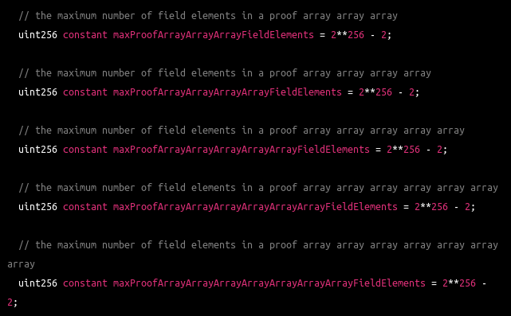
(In case you want to know how to do it kinda-properly, here is a PLONK verifier written by me)
But how well do these tools actually perform in the average case? I decided to take the GPT3 chatbot for a spin, and see if I could get it to solve a problem very relevant to me personally: changing the IPFS hash registered in my vitalik.eth ENS record, in order to make the new article that I just released on my blog viewable through ENS.
The process of updating the ENS view of my blog normally consists of two steps: first, publish the updated contents to IPFS, and second, update my ENS record to contain the IPFS hash of the new contents. Fleek has automated the first part of this for me for a long time: I just push the contents to Github, and Fleek uploads the new version to IPFS automatically. I have been told that I could change the settings to give Fleek the power to also edit my ENS, but here I want to be fully "self-sovereign" and not trust third parties, so I have not done this. Instead, so far, I have had to go to the GUI at app.ens.domains, click a few times, wait for a few loading screens to pass, and finally click "ADD / EDIT RECORD", change the CONTENT hash and click "Confirm". This is all a cumbersome process, and so today I finally thought that I would write a script in javascript to automate this all down to a single piece of Javascript that I could just copy-paste into my browser console in the future.
The task is simple: send an Ethereum transaction to the right address with the right calldata to update the content hash record in the ENS contract to equal the IPFS hash that Fleek gives to me. Yesterday, I did this all manually (twice, once to publish and again to add some corrections), and the IPFS hashes I got were:
bafybeifvvseiarzdfoqadphxtfu5yjfgj3cr6x344qce4s4f7wqyf3zv4e
bafybeieg6fhbjlhkzhbyfnmyid3ko5ogxp3mykdarsfyw66lmq6lq5z73m
If you click through to the top article in each one, you'll see the two different versions.
This hash format is often called a "bafyhash", because the hashes all begin with "bafy". But there is a problem: the format of the hash that is saved in Ethereum is not a bafyhash. Here's the calldata of the transaction that made one of the update operations:
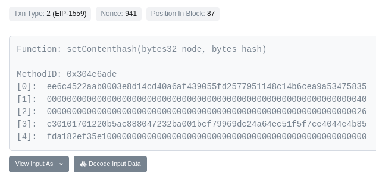
Yes, I checked, that is not hexadecimalized ASCII.
I do know that the IPFS content hash is the last two rows of the data. How do I know? Well, I checked the two different transactions I sent for my two updates, and I saw that the top row is the same and the bottom two rows are different. Good enough.
So what do I do to convert from a bafyhash into a binary IPFS content hash? Well, let me try asking the GPT3 chatbot!

Noooo!!!!!!!!!! Many issues. First, two things that are my fault:
- I forgot to mention this, but I wanted Javascript, not python.
- It uses external dependencies. I want my javascript copy-pasteable into the console, so I don't want any libraries.
These are on me to specify, though, and in my next instruction to the chatbot I will. But now we get to the things that are its fault:
- Bafyhashes are base 32, not base 58. There is a base-58 format for IPFS hashes, but those are called "QM hashes", not "bafyhashes".
- By "binary" I didn't want literal ones and zeroes, I wanted the normal binary format, a bytes or bytearray.
That said, at this part of the story I did not even realize that bafyhashes are base 32. I fixed the two issues that were my fault first:
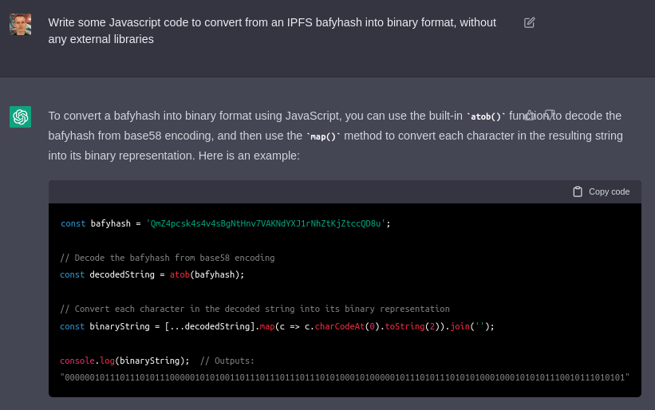
BAAAAAAAAAAAAAD, the AI trainer said sheepishly! The atob function is for base 64, not base 58.
OK, let's keep going. A few rounds later...
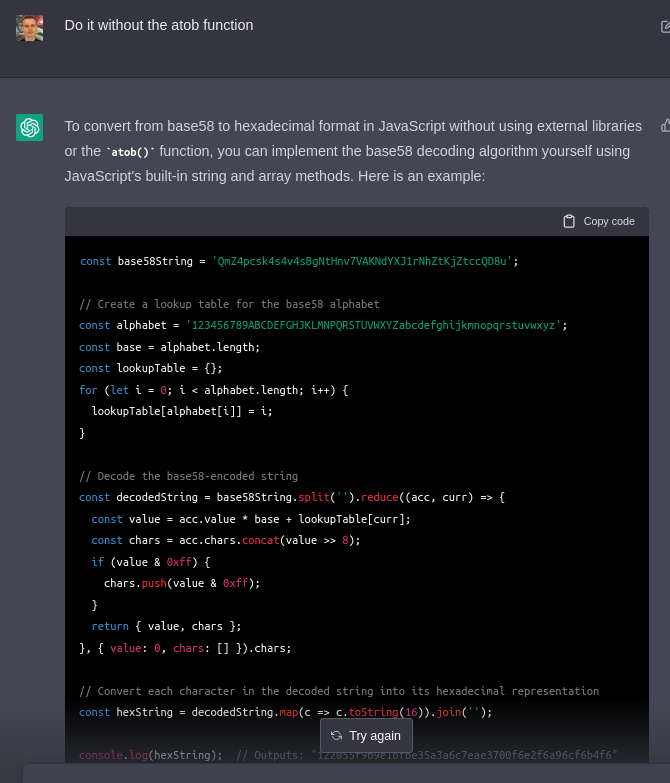
It's hard to see what's going on at first, but it's incredibly wrong. Basically, instead of converting the whole string from base 58 to base 16, it's converting each individual digit to base 16. Not what I want to do!
Guess I'll have to tell it what strategy it should use:
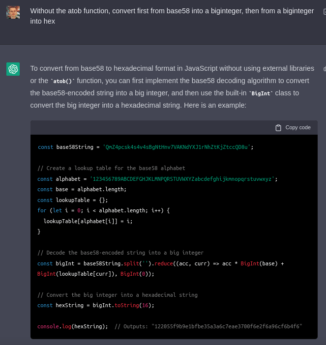
Better! I soon start to realize that I don't need base 58, I need base 32, and furthermore I need the lowercase version of base 32. I also want the code wrapped in a function. For these simpler steps, it gets much more cooperative:
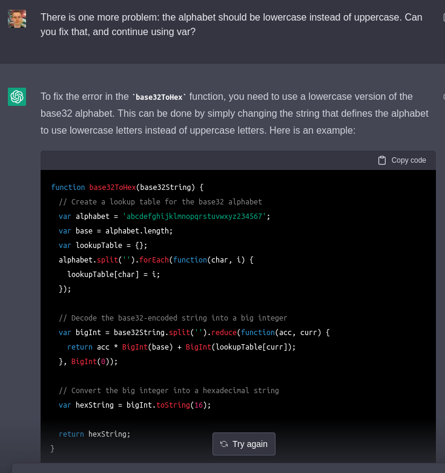
At this point, I try actually passing the bafyhashes I have into this function, and I get unrecognizably different outputs. Looks like I can't just assume this is generic base 32, and I have to poke into the details. Hmm, can I perhaps ask the GPT3 chatbot?
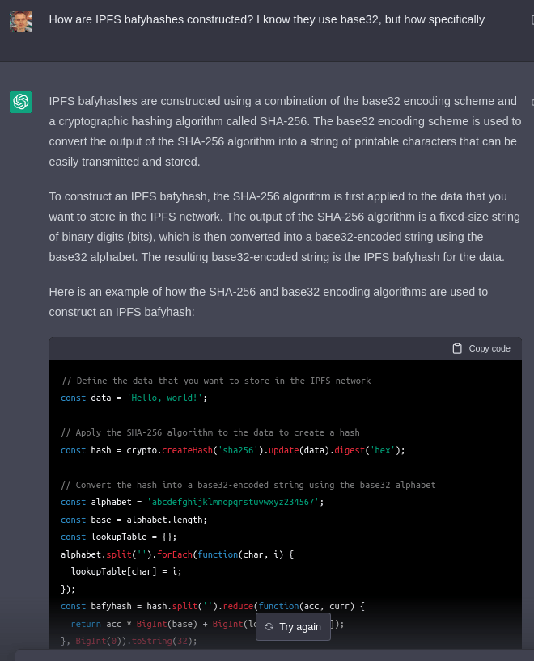
OK, this is not helpful. Let me try to be more specific.
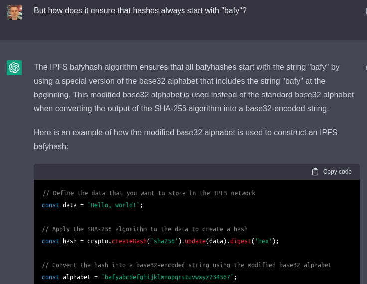
This is an.... interesting guess, but it's totally wrong. After this point, I give up on the GPT3 for a while, and keep poking at the generated hex and the actual hex in python until I find similarities. Eventually, I figure it out: I actually do convert both hexes to literal binary, and search from a binary substring of one in the other. I discover that there is an offset of 2 bits.
I just edit the code manually, compensating for the offset by dividing the bigint by 4:
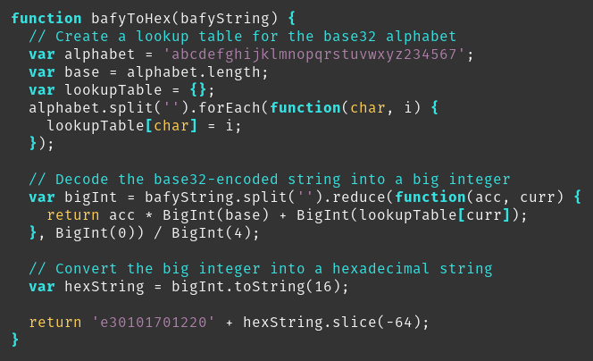
Because I already know what to do, I also just code the part that generates the entire calldata myself:

Anyway, then I switch to the next task: the portion of the Javascript that actually sends a transaction. I go back to the GPT3.
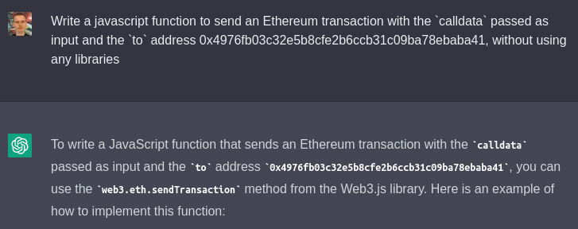
NOOOOO! I SAID NO LIBRARIES!!!!1!1!
I tell it what to use directly:
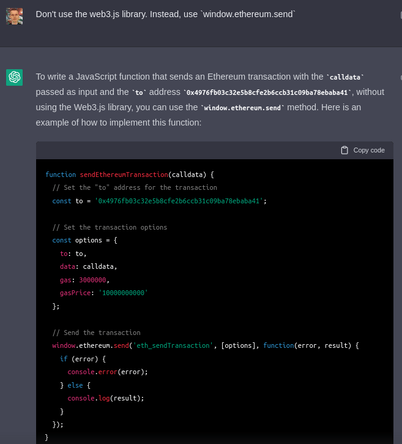
This is more successful. Two errors though:
- A
from address actually is required.
- You can't stick an integer into the
gas field, you need a hex value.
Also, post EIP-1559, there really isn't much point in hard-coding a gasPrice. From here, I do the rest of the work myself.
function bafyToHex(bafyString) {
// Create a lookup table for the base32 alphabet
var alphabet = 'abcdefghijklmnopqrstuvwxyz234567';
var base = alphabet.length;
var lookupTable = {};
alphabet.split('').forEach(function(char, i) {
lookupTable[char] = i;
});
// Decode the base32-encoded string into a big integer
var bigInt = bafyString.split('').reduce(function(acc, curr) {
return acc * BigInt(base) + BigInt(lookupTable[curr]);
}, BigInt(0)) / BigInt(4);
// Convert the big integer into a hexadecimal string
var hexString = bigInt.toString(16);
return 'e30101701220' + hexString.slice(-64);
}
function bafyToCalldata(bafyString) {
return (
'0x304e6ade' +
'ee6c4522aab0003e8d14cd40a6af439055fd2577951148c14b6cea9a53475835' +
'0000000000000000000000000000000000000000000000000000000000000040' +
'0000000000000000000000000000000000000000000000000000000000000026' +
bafyToHex(bafyString) +
'0000000000000000000000000000000000000000000000000000'
)
}
async function setBafyhash(bafyString) {
calldata = bafyToCalldata(bafyString);
const addr = (await window.ethereum.enable())[0];
// Set the "to" address for the transaction
const to = '0x4976fb03c32e5b8cfe2b6ccb31c09ba78ebaba41';
// Set the transaction options
const options = {
from: addr,
to: to,
data: calldata,
gas: "0x040000"
};
console.log(options);
// Send the transaction
window.ethereum.send('eth_sendTransaction', [options], function(error, result) {
if (error) {
console.error(error);
} else {
console.log(result);
}
});
}
I ask the GPT-3 some minor questions: how to declare an async function, and what keyword to use in Twitter search to search only tweets that contain images (needed to write this post). It answers both flawlessly: do async function functionName to declare an async function, and use filter:images to filter for tweets that contain images.
Conclusions
The GPT-3 chatbot was helpful as a programming aid, but it also made plenty of mistakes. Ultimately, I was able to get past its mistakes quickly because I had lots of domain knowledge:
- I know that it was unlikely that browsers would have a builtin for base 58, which is a relatively niche format mostly used in the crypto world, and so I immediately got suspicious of its attempt to suggest
atob
- I could eventually recall that the hash being all-lowercase means it's base 32 and not base 58
- I knew that the data in the Ethereum transaction had to encode the IPFS hash in some sensible way, which led me to eventually come up with the idea of checking bit offsets
- I know that a simple "correct" way to convert between base A and base B is to go through some abstract integer representation as an in-between, and that Javascript supported big integers.
- I knew about
window.ethereum.send
- When I got the error that I was not allowed to put an integer into the
gas field, I knew immediately that it was supposed to be hex.
At this point, AI is quite far from being a substitute for human programmers. In this particular case, it only sped me up by a little bit: I could have figured things out with Google eventually, and indeed in one or two places I did go back to googling. That said, it did introduce me to some coding patterns I had not seen before, and it wrote the base converter faster than I would have on my own. For the boilerplate operation of writing the Javascript to send a simple transaction, it did quite well.
That said, AI is improving quickly and I expect it to keep improving further and ironing out bugs like this over time.
Addendum: while writing the part of this post that involved more copy-paste than thinking, I put on my music playlist on shuffle. The first song that started playing was, coincidentally, Basshunter's Boten Anna ("Anna The Bot").
Updating my blog: a quick GPT chatbot coding experiment
2022 Dec 06 See all postsThe GPT chatbot has been all the rage the last few days. Along with many important use cases like writing song lyrics, acting as a language learning buddy and coming up with convincing-sounding arguments for arbitrary political opinions, one of the things that many people are excited about is the possibility of using the chatbot to write code.
In a lot of cases, it can succeed and write some pretty good code especially for common tasks. In cases that cover less well-trodden ground, however, it can fail: witness its hilariously broken attempt to write a PLONK verifier:
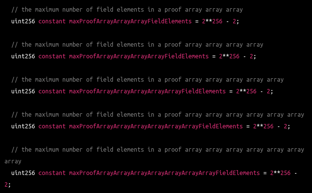
(In case you want to know how to do it kinda-properly, here is a PLONK verifier written by me)
But how well do these tools actually perform in the average case? I decided to take the GPT3 chatbot for a spin, and see if I could get it to solve a problem very relevant to me personally: changing the IPFS hash registered in my
vitalik.ethENS record, in order to make the new article that I just released on my blog viewable through ENS.The process of updating the ENS view of my blog normally consists of two steps: first, publish the updated contents to IPFS, and second, update my ENS record to contain the IPFS hash of the new contents. Fleek has automated the first part of this for me for a long time: I just push the contents to Github, and Fleek uploads the new version to IPFS automatically. I have been told that I could change the settings to give Fleek the power to also edit my ENS, but here I want to be fully "self-sovereign" and not trust third parties, so I have not done this. Instead, so far, I have had to go to the GUI at app.ens.domains, click a few times, wait for a few loading screens to pass, and finally click "ADD / EDIT RECORD", change the
CONTENThash and click "Confirm". This is all a cumbersome process, and so today I finally thought that I would write a script in javascript to automate this all down to a single piece of Javascript that I could just copy-paste into my browser console in the future.The task is simple: send an Ethereum transaction to the right address with the right calldata to update the content hash record in the ENS contract to equal the IPFS hash that Fleek gives to me. Yesterday, I did this all manually (twice, once to publish and again to add some corrections), and the IPFS hashes I got were:
bafybeifvvseiarzdfoqadphxtfu5yjfgj3cr6x344qce4s4f7wqyf3zv4ebafybeieg6fhbjlhkzhbyfnmyid3ko5ogxp3mykdarsfyw66lmq6lq5z73mIf you click through to the top article in each one, you'll see the two different versions.
This hash format is often called a "bafyhash", because the hashes all begin with "bafy". But there is a problem: the format of the hash that is saved in Ethereum is not a bafyhash. Here's the calldata of the transaction that made one of the update operations:
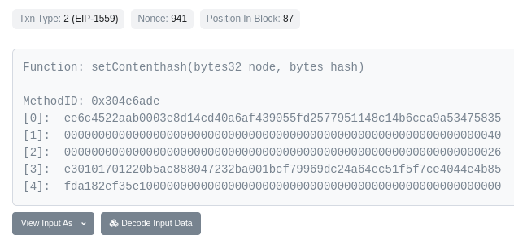
Yes, I checked, that is not hexadecimalized ASCII.
I do know that the IPFS content hash is the last two rows of the data. How do I know? Well, I checked the two different transactions I sent for my two updates, and I saw that the top row is the same and the bottom two rows are different. Good enough.
So what do I do to convert from a bafyhash into a binary IPFS content hash? Well, let me try asking the GPT3 chatbot!
Noooo!!!!!!!!!! Many issues. First, two things that are my fault:
These are on me to specify, though, and in my next instruction to the chatbot I will. But now we get to the things that are its fault:
That said, at this part of the story I did not even realize that bafyhashes are base 32. I fixed the two issues that were my fault first:
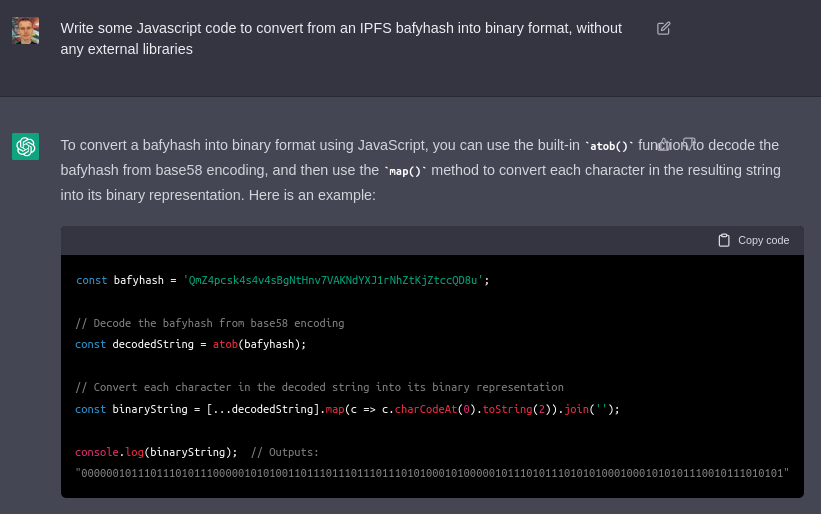
BAAAAAAAAAAAAAD, the AI trainer said sheepishly! The
atobfunction is for base 64, not base 58.OK, let's keep going. A few rounds later...
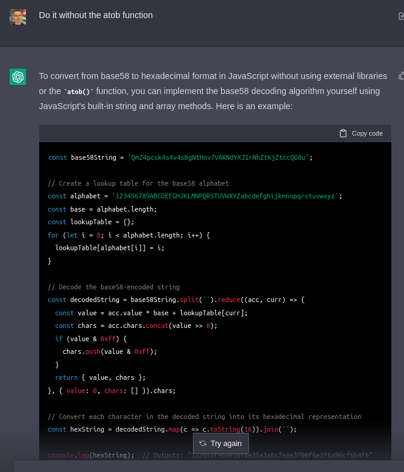
It's hard to see what's going on at first, but it's incredibly wrong. Basically, instead of converting the whole string from base 58 to base 16, it's converting each individual digit to base 16. Not what I want to do!
Guess I'll have to tell it what strategy it should use:
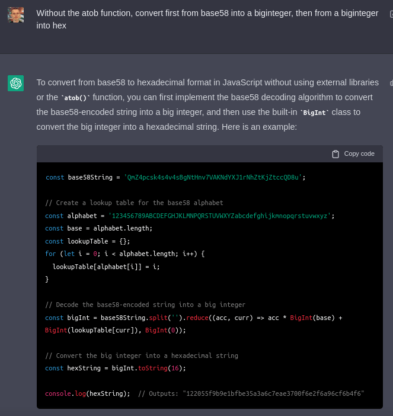
Better! I soon start to realize that I don't need base 58, I need base 32, and furthermore I need the lowercase version of base 32. I also want the code wrapped in a function. For these simpler steps, it gets much more cooperative:
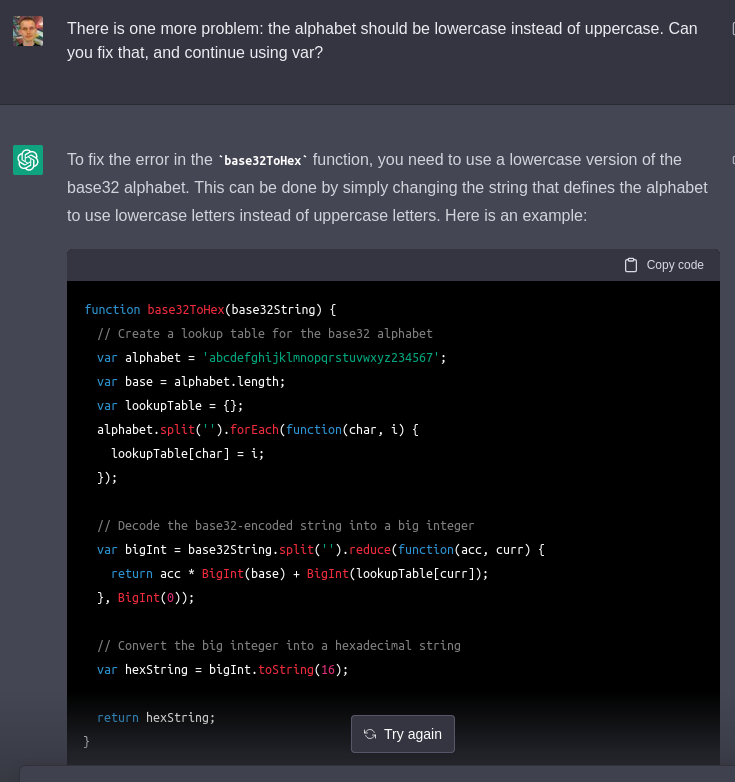
At this point, I try actually passing the bafyhashes I have into this function, and I get unrecognizably different outputs. Looks like I can't just assume this is generic base 32, and I have to poke into the details. Hmm, can I perhaps ask the GPT3 chatbot?
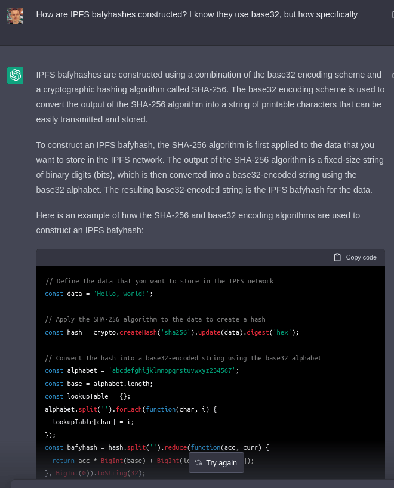
OK, this is not helpful. Let me try to be more specific.
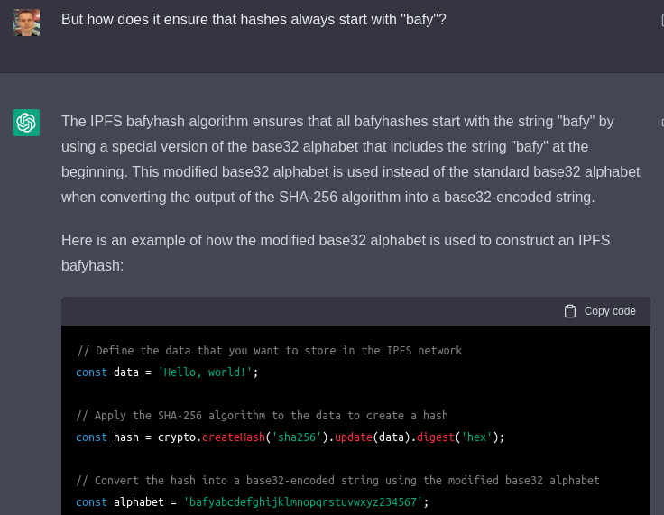
This is an.... interesting guess, but it's totally wrong. After this point, I give up on the GPT3 for a while, and keep poking at the generated hex and the actual hex in python until I find similarities. Eventually, I figure it out: I actually do convert both hexes to literal binary, and search from a binary substring of one in the other. I discover that there is an offset of 2 bits.
I just edit the code manually, compensating for the offset by dividing the bigint by 4:
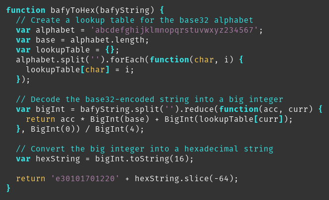
Because I already know what to do, I also just code the part that generates the entire calldata myself:
Anyway, then I switch to the next task: the portion of the Javascript that actually sends a transaction. I go back to the GPT3.
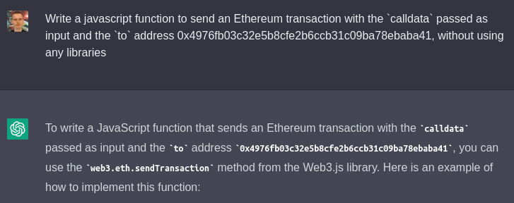
NOOOOO! I SAID NO LIBRARIES!!!!1!1!
I tell it what to use directly:
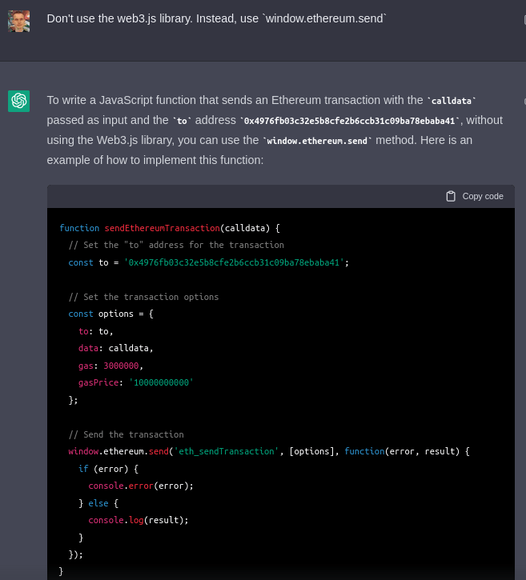
This is more successful. Two errors though:
fromaddress actually is required.gasfield, you need a hex value.Also, post EIP-1559, there really isn't much point in hard-coding a
gasPrice. From here, I do the rest of the work myself.function bafyToHex(bafyString) { // Create a lookup table for the base32 alphabet var alphabet = 'abcdefghijklmnopqrstuvwxyz234567'; var base = alphabet.length; var lookupTable = {}; alphabet.split('').forEach(function(char, i) { lookupTable[char] = i; }); // Decode the base32-encoded string into a big integer var bigInt = bafyString.split('').reduce(function(acc, curr) { return acc * BigInt(base) + BigInt(lookupTable[curr]); }, BigInt(0)) / BigInt(4); // Convert the big integer into a hexadecimal string var hexString = bigInt.toString(16); return 'e30101701220' + hexString.slice(-64); } function bafyToCalldata(bafyString) { return ( '0x304e6ade' + 'ee6c4522aab0003e8d14cd40a6af439055fd2577951148c14b6cea9a53475835' + '0000000000000000000000000000000000000000000000000000000000000040' + '0000000000000000000000000000000000000000000000000000000000000026' + bafyToHex(bafyString) + '0000000000000000000000000000000000000000000000000000' ) } async function setBafyhash(bafyString) { calldata = bafyToCalldata(bafyString); const addr = (await window.ethereum.enable())[0]; // Set the "to" address for the transaction const to = '0x4976fb03c32e5b8cfe2b6ccb31c09ba78ebaba41'; // Set the transaction options const options = { from: addr, to: to, data: calldata, gas: "0x040000" }; console.log(options); // Send the transaction window.ethereum.send('eth_sendTransaction', [options], function(error, result) { if (error) { console.error(error); } else { console.log(result); } }); }I ask the GPT-3 some minor questions: how to declare an
asyncfunction, and what keyword to use in Twitter search to search only tweets that contain images (needed to write this post). It answers both flawlessly: doasync function functionNameto declare an async function, and usefilter:imagesto filter for tweets that contain images.Conclusions
The GPT-3 chatbot was helpful as a programming aid, but it also made plenty of mistakes. Ultimately, I was able to get past its mistakes quickly because I had lots of domain knowledge:
atobwindow.ethereum.sendgasfield, I knew immediately that it was supposed to be hex.At this point, AI is quite far from being a substitute for human programmers. In this particular case, it only sped me up by a little bit: I could have figured things out with Google eventually, and indeed in one or two places I did go back to googling. That said, it did introduce me to some coding patterns I had not seen before, and it wrote the base converter faster than I would have on my own. For the boilerplate operation of writing the Javascript to send a simple transaction, it did quite well.
That said, AI is improving quickly and I expect it to keep improving further and ironing out bugs like this over time.
Addendum: while writing the part of this post that involved more copy-paste than thinking, I put on my music playlist on shuffle. The first song that started playing was, coincidentally, Basshunter's Boten Anna ("Anna The Bot").